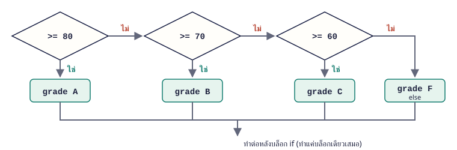

เมื่อจบบทนี้ นิสิตจะทำได้ เขียน if / elif / else ให้ครอบคลุมทุกกรณี เรียงเงื่อนไขถูกลำดับ และเยื้องบรรทัดถูกต้อง
4.1 if: ทำเมื่อเงื่อนไขเป็นจริง if เงื่อนไข: ตามด้วยคำสั่งที่เยื้อง 4 ช่อง คำสั่งที่เยื้องจะทำเฉพาะเมื่อเงื่อนไขเป็น True บรรทัดที่ไม่เยื้องทำทุกครั้ง
topic_4_1.py
temperature = 36
if temperature >= 35 :
print ("อากาศร้อนมาก" )
print ("ดื่มน้ำเยอะ ๆ" )
print ("จบการตรวจ" )ผลลัพธ์ อากาศร้อนมาก
ดื่มน้ำเยอะ ๆ
จบการตรวจ จำง่าย ๆ อย่าลืม : ท้ายบรรทัด if และเยื้องให้เท่ากันทุกบรรทัดในบล็อก
4.2 if-else: เลือก 1 ใน 2 ทาง else: คือกรณีที่เหลือ ทำเมื่อเงื่อนไขของ if เป็นเท็จ ทุกค่าจึงได้ทำทางใดทางหนึ่งเสมอ
topic_4_2.py
score = 42
if score >= 50 :
print ("ผ่าน" )
else :
print ("ไม่ผ่าน" )4.3 elif: หลายทางเลือก เมื่อมีมากกว่า 2 กรณี ใช้ elif Python ตรวจจากบนลงล่างและเลือกทำบล็อกแรกที่เป็นจริงเพียงบล็อกเดียว ที่เหลือข้ามไปทั้งหมด

ผังการทำงาน if / elif / else: ตรวจเงื่อนไขทีละข้อจากบนลงล่าง เจอข้อที่จริงก็ทำแล้วออกทันที topic_4_3.py
score = 74
if score >= 80 :
grade = "A"
elif score >= 70 :
grade = "B"
elif score >= 60 :
grade = "C"
else :
grade = "F"
print ("เกรด" , grade)จำง่าย ๆ ตรวจช่วงตัวเลขให้เรียงจากมากไปน้อย ถ้าเอา score >= 60 ไว้บนสุด คะแนน 95 จะได้ C
4.4 เงื่อนไขหลายข้อ และ if ซ้อน รวมเงื่อนไขในบรรทัดเดียวด้วย and / or หรือใส่ if ไว้ในอีก if ก็ได้ (เยื้องเพิ่มอีกระดับ) ให้เลือกแบบที่อ่านง่ายกว่า
topic_4_4.py
age = 20
has_id = True
if age >= 18 and has_id:
print ("เข้างานได้" )
if age >= 18 :
if has_id:
print ("เข้างานได้ (แบบ if ซ้อน)" )
else :
print ("กรุณาแสดงบัตร" )ผลลัพธ์ เข้างานได้
เข้างานได้ (แบบ if ซ้อน) 4.5 ข้อผิดพลาดที่เจอบ่อย เงื่อนไขส่วนใหญ่ผิดจาก 4 สาเหตุนี้ ทดสอบด้วยค่าตรงขอบ เช่น 79, 80, 81 จะช่วยจับได้เร็ว
ตัวอย่างโปรแกรม
ตัวอย่าง 4.1 ตัดเกรดจากคะแนนตรวจค่าที่ผิดก่อน แล้วไล่ช่วงคะแนนจากมากไปน้อย
example_4_1.py
score = int (input ("คะแนน (0-100): " ))
if score < 0 or score > 100 :
print ("คะแนนไม่ถูกต้อง" )
elif score >= 80 :
print ("เกรด A" )
elif score >= 70 :
print ("เกรด B" )
elif score >= 60 :
print ("เกรด C" )
elif score >= 50 :
print ("เกรด D" )
else :
print ("เกรด F" )ผลลัพธ์ · ตัวที่ขีดเส้นใต้คือค่าที่ผู้ใช้พิมพ์ คะแนน (0-100): 74
เกรด B อธิบาย ตรวจค่าที่อยู่นอกช่วง 0–100 ก่อน เพื่อไม่ให้ค่าผิดได้เกรด 74 ไม่ถึง 80 จึงข้ามไปตรวจ >= 70 ซึ่งจริง จึงแสดงเกรด B แล้วจบ ไม่ต้องเขียน score >= 70 and score < 80 เพราะถ้ามาถึง elif นี้แปลว่าไม่ถึง 80 แน่นอน
ตัวอย่าง 4.2 คำนวณค่าส่งเงื่อนไขส่งฟรีมีผลเหนือกว่าทุกกรณี จึงตรวจเป็นข้อแรก
example_4_2.py
total = float (input ("ยอดซื้อ: " ))
member = input ("เป็นสมาชิกไหม (y/n): " )
if total >= 500 :
shipping = 0
elif member == "y" :
shipping = 20
else :
shipping = 45
print (f"ค่าส่ง {shipping} บาท" )
print (f"ยอดชำระ {total + shipping:.2f} บาท" )ผลลัพธ์ · ตัวที่ขีดเส้นใต้คือค่าที่ผู้ใช้พิมพ์ ยอดซื้อ: 450
เป็นสมาชิกไหม (y/n): y
ค่าส่ง 20 บาท
ยอดชำระ 470.00 บาท อธิบาย ยอดตั้งแต่ 500 ส่งฟรีทุกคน จึงตรวจเป็นข้อแรก ถ้าไม่ถึง 500 จึงดูว่าเป็นสมาชิกหรือไม่ แต่ละบล็อกกำหนดค่า shipping แล้วค่อยแสดงผลครั้งเดียวด้านล่าง
แบบฝึกหัดท้ายบท
เรียงจากง่ายไปยาก ลองเขียนเองให้ได้ผลลัพธ์ตรงตัวอย่างก่อน แล้วค่อยเปิดเฉลย
ระดับความยาก: ง่าย ปานกลาง ท้าทาย
ข้อ 4.1 บวก ลบ หรือศูนย์ง่าย รับตัวเลข แล้วบอกว่าเป็นจำนวนบวก จำนวนลบ หรือศูนย์
เข้าใจโจทย์
โจทย์ให้ ตัวเลข เช่น -3
ต้องหา จำนวนลบวิธีคิด มี 3 กรณี จึงใช้ if / elif / else ตรวจ > 0 และ < 0 ที่เหลือคือศูนย์ ตัวอย่างผลลัพธ์ · ตัวที่ขีดเส้นใต้คือค่าที่ผู้ใช้พิมพ์ ตัวเลข: -3
จำนวนลบ
ข้อ 4.2 เลขคู่หรือเลขคี่ง่าย รับจำนวนเต็ม แล้วแสดงคำว่า เลขคู่ หรือ เลขคี่
เข้าใจโจทย์
โจทย์ให้ จำนวนเต็ม เช่น 15
ต้องหา 15 เป็นเลขคี่วิธีคิด ตรวจเศษจากการหาร 2 ด้วย % มี 2 กรณี ใช้ if-else ตัวอย่างผลลัพธ์ · ตัวที่ขีดเส้นใต้คือค่าที่ผู้ใช้พิมพ์ จำนวนเต็ม: 15
15 เป็นเลขคี่
ข้อ 4.3 ค่าจอดรถปานกลาง ห้างคิดค่าจอดรถ: 2 ชั่วโมงแรกฟรี ชั่วโมงที่ 3–5 คิดชั่วโมงละ 20 บาท เกิน 5 ชั่วโมงเหมาจ่าย 150 บาท
เข้าใจโจทย์
โจทย์ให้ จำนวนชั่วโมงที่จอด (จำนวนเต็ม) เช่น 4
ต้องหา ค่าจอด 40 บาทวิธีคิด แบ่ง 3 ช่วง: <= 2, <= 5, ที่เหลือ ช่วงกลางคิดเฉพาะชั่วโมงที่เกิน 2: (hours - 2) * 20 ทดสอบค่าขอบ 2, 5, 6 ตัวอย่างผลลัพธ์ · ตัวที่ขีดเส้นใต้คือค่าที่ผู้ใช้พิมพ์ จำนวนชั่วโมง: 4
ค่าจอด 40 บาท
ข้อ 4.4 ตรวจรหัสผ่านปานกลาง รหัสผ่านที่ดีต้องยาวอย่างน้อย 8 ตัวอักษร และต้องไม่ใช่ password ให้ตรวจรหัสที่ผู้ใช้พิมพ์
เข้าใจโจทย์
โจทย์ให้ รหัสผ่าน เช่น hello123
ต้องหา รหัสผ่านใช้ได้ หรือบอกเหตุผลที่ใช้ไม่ได้วิธีคิด len(text) นับจำนวนตัวอักษรแยกเหตุผลด้วย if / elif else คือกรณีที่ผ่านทุกข้อ ตัวอย่างผลลัพธ์ · ตัวที่ขีดเส้นใต้คือค่าที่ผู้ใช้พิมพ์ รหัสผ่าน: hello123
รหัสผ่านใช้ได้
ข้อ 4.5 แปลผล BMIท้าทาย รับน้ำหนัก (kg) และส่วนสูง (m) คำนวณ BMI แล้วแปลผล: ต่ำกว่า 18.5 ผอม, 18.5–22.9 ปกติ, 23–24.9 ท้วม, ตั้งแต่ 25 อ้วน
เข้าใจโจทย์
โจทย์ให้ น้ำหนัก 68 ส่วนสูง 1.70
ต้องหา ค่า BMI ทศนิยม 1 ตำแหน่ง และผลการแปล วิธีคิด คำนวณ weight / (height * height) เรียงเงื่อนไขจากค่าน้อยไปมาก ใช้ < แสดงทั้งค่าและผล ตัวอย่างผลลัพธ์ · ตัวที่ขีดเส้นใต้คือค่าที่ผู้ใช้พิมพ์ น้ำหนัก (kg): 68
ส่วนสูง (m): 1.70
BMI 23.5 = ท้วม
ข้อ 4.6 ปีอธิกสุรทินแบบมีคำอธิบายท้าทาย รับปี ค.ศ. แล้วบอกว่าเป็นปีอธิกสุรทินหรือไม่ พร้อมเหตุผล
เข้าใจโจทย์
โจทย์ให้ ปี เช่น 1900
ต้องหา 1900 ไม่ใช่ปีอธิกสุรทิน (หาร 100 ลงตัวแต่หาร 400 ไม่ลงตัว)วิธีคิด เริ่มจากกรณีแคบสุด: หาร 400 ลงตัว ถัดมา: หาร 100 ลงตัว ถัดมา: หาร 4 ลงตัว ที่เหลือไม่ใช่ ตัวอย่างผลลัพธ์ · ตัวที่ขีดเส้นใต้คือค่าที่ผู้ใช้พิมพ์ ปี ค.ศ.: 1900
1900 ไม่ใช่ปีอธิกสุรทิน (หาร 100 ลงตัวแต่หาร 400 ไม่ลงตัว)